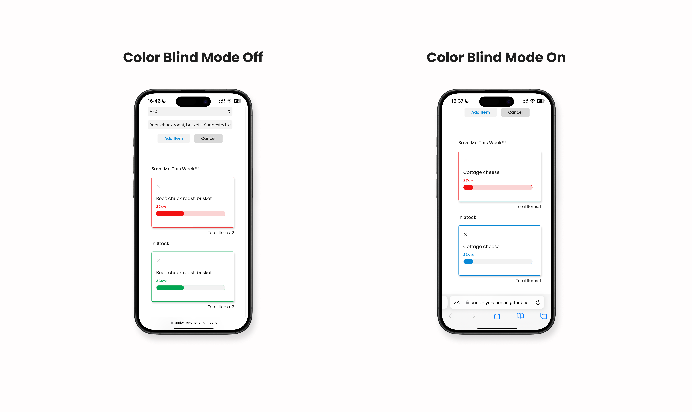
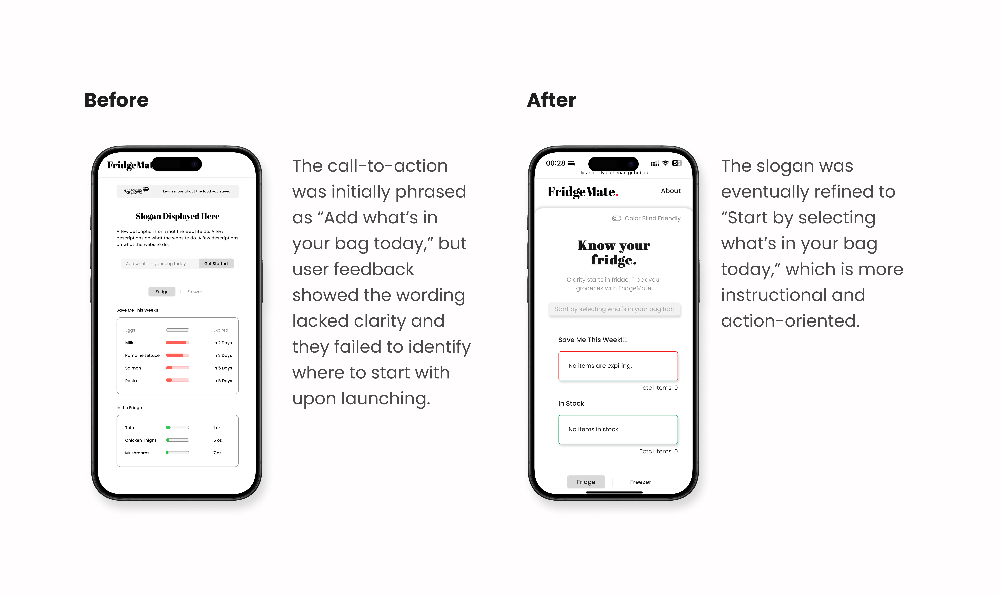
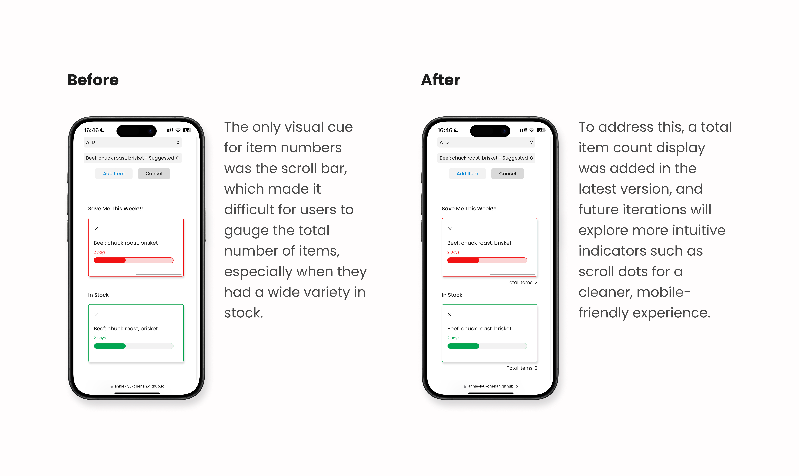

Problem
Despite growing awareness of food waste, individuals lack an intuitive, low-barrier tool for managing their fridge storage at home.
User Research
Target Audience
Anyone with a fridge, especially disorganized people who tend to forget what they own in their fridge.
Methods
User interviews were conducted across a range of household contexts.
User Interview Highlights
- Users often purchase duplicate items or forget about existing food until it expires, regardless of grocery shopping habits or household sizes.
- The burden of expired food extends beyond environmental responsibility and household maintenance. It also creates mental stress and reinforces feelings of disorganization.
Design System

The design system adopts clean, simplified, and easily distinguishable colors and UI elements to support quick recognition and ease of use.
Challenges & Solutions
User Flow

The initial user flow relied on typing, automatic associations, and customizable inputs for adding new items. However, typing proved to be less accessible on mobile devices, particularly smartphones. After several iterations, a search system inspired by grocery store self-checkout interfaces was introduced. Users can now search for items by category and by initial letter.
The searching and suggested shelf life features were supported by FoodKeeper API, which offered default food categories and shelf life information for a variety of common items.

Compared to earlier versions, the homepage was simplified for mobile users. Less readable displays and complex quantity input flows was replaced by two horizontally scrollable cards, making it easier to browse, edit, and manage food items. Additionally, features such as recipe scheduling and food-saving calculations were removed to streamline the user flow and reduce cognitive load.
Accessibility
Since expiring and in-stock items are differentiated using red and green, a color-blind mode was introduced that replaces green UI elements with blue, improving accessibility for users with color vision deficiencies.
Usability Testing
Methods
This study employed a mixed-methods usability testing approach, combining task-based testing and post-task interviews to evaluate the usability and user experience of the FridgeMate demo.
Participants
A total of 5 participants, aged between 23 and 51, were recruited for this study. All participants currently own a fridge or share a fridge with others.
Improvements
-

- Clearer onboarding instructions for first-time users. 
- More intuitive visual cues to display the total number of stored items.
Future Directions
User Interface
Introduce additional intuitive visual cues and features to support quicker understanding and navigation. Potential features include pop-up alerts for expiring items, reverse-chronological item listing based on shelf life, and a “scan-to-add” functionality for quicker input.
Accessibility
Expand accessibility to support a broader range of users, including individuals with lower English proficiency and older adults with limited technical experience. This may involve adjustable font sizes, clearer onboarding instructions, and more customizable interface settings, according to user research results.
Tech Stack & Sources
Tech Stack: HTML, CSS, JavaScript, Figma, ChatGPT 4o, GitHub Copilot.
Sources: Unsplash, MDN web docs, Phosphor Icons, USDA Department of Agriculture Food Safety and Inspection Service FoodKeeper data.
For additional details, please refer to the Documents section on the FridgeMate website.